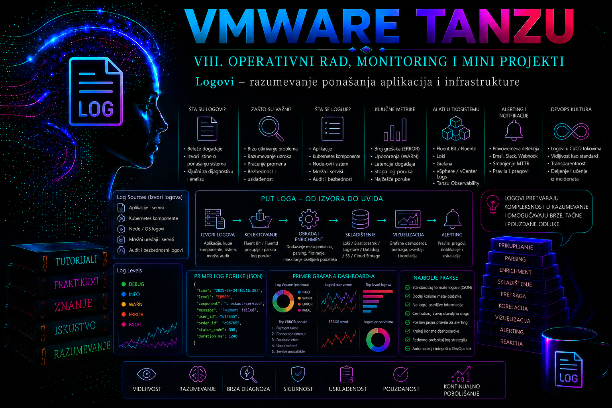

VMware & Tanzu

Zašto jedan incident ostavlja trag u više sistema
U Tanzu okruženju korisnički zahtev ne prolazi kroz jednu komponentu. Promena VKS klastera može početi prijavom u vSphere Client ili pozivom API-ja, nastaviti se kroz vCenter Server i Workload Control Plane, izazvati usaglašavanje Cluster API kontrolera, promene virtuelnih mašina na ESXi hostovima i, konačno, reakcije Kubernetes kontrolera u workload klasteru. Aplikativni zahtev prolazi drugim putem: load balancer ili Ingress, Service, Pod i proces u kontejneru. Zbog toga nijedan pojedinačni log nije „cela istina”. Administrator rekonstruiše tok kombinovanjem vremena, identiteta, objekta, operacije, statusa, izvorišne adrese i korelacionih identifikatora.
Prethodna lekcija postavila je baznu liniju metrika, alarma i kapaciteta. Ova lekcija dodaje dokazni sloj: šta se dogodilo, ko ili šta je pokrenulo promenu, kojim putem je zahtev prošao i gde je prvi put odstupio od očekivanog ponašanja. Metrika pokazuje da je stopa grešaka porasla; događaj pokazuje da scheduler ne može da postavi Pod; komponentni log objašnjava neuspeh; audit trag pokazuje koji identitet je neposredno pre incidenta promenio objekat.
Terminološka i verzijska napomena. U aktuelnoj VMware Cloud Foundation 9 dokumentaciji koristi se naziv vSphere Kubernetes Service (VKS). U vSphere 8 dokumentaciji, starijim komandama, putanjama logova i Knowledge Base člancima još se pojavljuju Tanzu Kubernetes Grid Service, TKG Service i TKGS. To nije automatski dokaz da je postupak zastareo, ali administrator mora proveriti izdanje vCenter Server-a, Supervisor-a, VKS servisa i Kubernetes release konkretne instalacije. Nazivi resursa, dostupnost ekrana, način preuzimanja support bundle-a i integracija sa centralnim log sistemom mogu se razlikovati.
Log, Kubernetes događaj, vSphere događaj i audit zapis nisu isto
| Izvor dokaza | Šta odgovara | Ograničenje | Tipična upotreba |
|---|---|---|---|
| Komponentni ili aplikativni log | Kako je proces obradio zahtev i koju je grešku prijavio | Format i nivo detalja zavise od komponente; rotacija može brzo ukloniti dokaz | Uzrok greške, stack trace, timeout, zavisnost, restart |
Kubernetes Event |
Šta je kontroler, scheduler ili kubelet primetio na objektu | Kratkotrajna operativna evidencija; ponovljeni događaji se agregiraju i nisu trajan audit | FailedScheduling, FailedMount, image pull, probe i eviction problemi |
| vSphere Task/Event | Koja je infrastrukturna operacija pokrenuta, nad kojim objektom i sa kojim ishodom | Sažet prikaz; detaljan uzrok i izvor klijenta često zahtevaju vCenter logove | VM operacije, reconfiguration, login, permission i lifecycle događaji |
| Kubernetes API audit događaj | Ko je pozvao API, koju URI putanju i verb, nad kojim objektom, iz koje adrese i sa kojim statusom | Postoji samo ako je audit omogućen i pravilno usmeren; nivo politike određuje sadržaj | Bezbednosna istraga, dokaz promene i analiza RBAC/admission odluke |
| Centralizovani zapis | Korelacija i pretraga više izvora kroz zajednički vremenski opseg | Kvalitet zavisi od parsiranja, vremenske sinhronizacije, pokrivenosti i retencije | Incident response, trendovi, detekcije i dokazivanje usklađenosti |
Kubernetes audit događaj iz API grupe audit.k8s.io nije isto što i objekat Event iz events.k8s.io ili core API grupe. Audit je bezbednosno relevantan zapis API zahteva; običan Event je obaveštenje kontrolera o stanju resursa. Komanda kubectl get events zato ne može odgovoriti ko je promenio Deployment ako odgovarajući Event nije emitovan, dok audit zapis može sadržati korisnika, grupe, sourceIPs, userAgent, verb, requestURI, objectRef, odgovor i jedinstveni auditID.
Mapa izvora kroz vSphere, Supervisor, VKS i aplikaciju
| Sloj | Primarni izvori | Šta se traži | Način pristupa |
|---|---|---|---|
| vCenter Server | Tasks and Events, vpxd.log, vpxd-profiler.log, wcpsvc.log |
Korisnik, MoID, task, session/opID, ClientIP, WCP lifecycle i API greške | vSphere Client, VCSA shell uz odobren pristup ili vCenter support bundle |
| ESXi | hostd.log, vpxa.log, vmkernel.log, vmkwarning.log |
Host agent, komunikacija sa vCenter-om, VM operacije, storage i mrežni simptomi | Centralni syslog/support bundle; ESXi Shell samo kada je odobren |
| Supervisor i VKS servis | wcpsvc.log, VKS servisni logovi, Supervisor support bundle, kontrolerski Pod logovi |
Namespace, cluster lifecycle, reconciliation, Content Library, VM class, mreža i storage | vSphere Client, odgovarajući Kubernetes kontekst i support bundle |
| VKS control plane i node | API audit, API server, scheduler, controller manager, kubelet i container runtime logovi | API odluka, scheduling, reconciliation, node i runtime problem | kubectl, centralni log sistem i podržani cluster log bundle |
| Aplikacija | stdout/stderr, strukturisani aplikativni, Ingress i service mesh logovi |
Request/trace ID, status, latency, tenant, verzija i zavisnost | kubectl logs za kratku dijagnostiku; agent/forwarder za trajno čuvanje |
Na vCenter Server Appliance-u glavni vCenter log je /var/log/vmware/vpxd/vpxd.log; /var/log/vmware/vpxd/vpxd-profiler.log pomaže pri povezivanju sesije sa izvorišnom adresom, dok je /var/log/vmware/wcp/wcpsvc.log primarni log Workload Control Plane servisa. Putanje i sadržaj proveravaju se prema tačnoj verziji. Produkciona praksa je preuzimanje support bundle-a ili centralna kolekcija, a ne nekontrolisano uključivanje SSH-a i ručno menjanje fajlova na appliance-u.
Za VKS servis Broadcom dokumentacija za novija izdanja navodi servisne logove pod /var/log/tkg-svs/ i WCP kontrolerske logove pod /var/log/vmware/wcp/. Naziv direktorijuma tkg-svs zadržava istorijski TKG naziv i u okruženju koje se korisnički predstavlja kao VKS. Ne treba zaključivati lokaciju samo iz marketinškog naziva proizvoda.
Vreme, identitet objekta i korelacioni ključevi
Korelacija počinje normalizacijom vremena. vCenter, ESXi, Supervisor node-ovi, VKS node-ovi, centralni log sistem i klijentski sistemi moraju koristiti pouzdan NTP. U incidentnom zapisu uvek se čuvaju vremenska zona i precizan interval, na primer 2026-07-14T08:12:00Z–08:18:00Z, a ne samo „oko deset sati”. Lokalno vreme interfejsa može se razlikovati od UTC zapisa u logu. Clock skew od nekoliko minuta može promeniti prividni redosled uzroka i posledice.
Ime objekta nije dovoljno. Pod se ponovo kreira pod drugim imenom; VM može biti preimenovana; isti namespace i naziv klastera mogu postojati u različitim okruženjima. Kada su dostupni, čuvaju se vSphere Managed Object ID, instance UUID, Kubernetes metadata.uid, namespace, resourceVersion, container ID, image digest, node i cluster identitet. Za HTTP tok prenosi se traceparent ili organizacioni request ID kroz proxy i aplikaciju; lozinka, bearer token, session cookie i sadržaj tajne nikada se ne koriste kao korelacioni podatak.
| Pitanje | Minimalni ključ | Dodatni dokaz |
|---|---|---|
| Ko je promenio Kubernetes objekat? | Vreme, cluster, namespace, UID, verb i audit user.username |
sourceIPs, userAgent, auditID, response code i admission annotations |
| Ko je pokrenuo vSphere task? | Task vreme, korisnik, objekat i MoID | Session ID, opID i ClientIP iz vpxd/vpxd-profiler zapisa |
| Zašto Pod nije postao Ready? | Pod UID, node, container i poslednji Event | Kubelet/runtime log, kubectl logs --previous, probe status i aplikativni request ID |
| Zašto VKS klaster ne napreduje? | Cluster UID, namespace, uslovi i vreme poslednje promene | Cluster API/VKS kontroler, WCP, vCenter task i VM/network/storage događaji |
Kubernetes logovi i događaji: bezbedna read-only dijagnostika
Sledeće komande izvršavaju se sa administratorske radne stanice i odgovarajućim kubeconfig kontekstom. One čitaju stanje, ali logovi mogu sadržati lične ili poverljive podatke, pa izlaz ne treba nekontrolisano kopirati u tiket. Pre prve komande proverava se kontekst i ograničava vremenski prozor.
kubectl config current-context
kubectl cluster-info
kubectl get nodes -o wide
# Događaji za namespace, hronološki po poslednjem opažanju
kubectl get events -n payments --sort-by='.metadata.creationTimestamp'
# Potpun opis problematičnog poda i događaji povezani baš sa njim
kubectl describe pod payments-api-7d8f6b7c9f-k2m4n -n payments
kubectl get events -n payments \
--field-selector involvedObject.kind=Pod,involvedObject.name=payments-api-7d8f6b7c9f-k2m4n
# Log konkretnog kontejnera u ograničenom prozoru
kubectl logs pod/payments-api-7d8f6b7c9f-k2m4n -n payments \
-c application --since=20m --timestamps --tail=500
# Prethodna instanca kontejnera posle restarta
kubectl logs pod/payments-api-7d8f6b7c9f-k2m4n -n payments \
-c application --previous --timestamps --tail=500kubectl logs --previous je naročito važan kod CrashLoopBackOff, jer trenutni kontejner može još biti prazan dok je prethodna instanca ostavila uzrok pada. Ako Pod ima init ili sidecar kontejnere, uvek se navodi -c; podrazumevani izbor može prikazati pogrešan tok. Opcija -f služi kratkotrajnom praćenju, ali nije centralizacija niti dokaz retencije.
Kubernetes događaji su efemerni i server može agregirati ponavljanje kroz polja kao što su count, first/last observed time ili series, zavisno od API prikaza. Zato se za produkcioni incident relevantni događaji izvoze ili centralizuju pre isteka retencije. Povećanje retencije bez proračuna opterećenja API servera i etcd-a nije bezazlena korekcija.
Audit trag Kubernetes API-ja
Audit lifecycle može emitovati faze RequestReceived, ResponseStarted, ResponseComplete i Panic. Politika određuje nivo zapisa: None, Metadata, Request ili RequestResponse. Pravila se obrađuju redom i primenjuje se prvo koje odgovara zahtevu. Široko uključivanje RequestResponse može beležiti tela zahteva i odgovora, povećati I/O i izložiti osetljive podatke. Preporučena politika daje dovoljno metapodataka za odgovornost, detaljnije nivoe ograničava na odabrane resurse i eksplicitno izuzima ili spušta nivo za vrlo učestale i osetljive zahteve.
apiVersion: audit.k8s.io/v1
kind: Policy
omitStages:
- RequestReceived
omitManagedFields: true
rules:
- level: None
resources:
- group: ""
resources: ["events"]
- level: Metadata
resources:
- group: ""
resources: ["secrets"]
- level: Request
verbs: ["create", "update", "patch", "delete", "deletecollection"]
- level: MetadataOvo je obrazac za dizajn politike, a ne manifest koji se slepo primenjuje na upravljani VKS control plane. Način konfiguracije audit politike i backend-a zavisi od podržanog VKS izdanja i modela upravljanja. Direktna izmena statičkih Pod manifesta ili parametara API servera na vendor-managed control plane VM-ovima može biti nepodržana i izgubljena pri reconciliation-u ili nadogradnji. Koristi se dokumentovani mehanizam konkretnog izdanja ili se otvara zahtev podršci.
{
"kind": "Event",
"apiVersion": "audit.k8s.io/v1",
"level": "Metadata",
"auditID": "bba15b8b-9aa8-4bd0-8d37-2f4f0fba390c",
"stage": "ResponseComplete",
"requestURI": "/apis/apps/v1/namespaces/payments/deployments/payments-api",
"verb": "patch",
"user": {
"username": "system:serviceaccount:delivery:deployer",
"groups": ["system:serviceaccounts", "system:authenticated"]
},
"sourceIPs": ["10.20.30.41"],
"userAgent": "kubectl/v1.xx",
"objectRef": {
"resource": "deployments",
"namespace": "payments",
"name": "payments-api",
"uid": "5ee2d6af-6c29-49ad-a35e-874a0fdcbde9"
},
"responseStatus": {"code": 200}
}Audit zapis dokazuje identitet koji je Kubernetes API autentifikovao, ne nužno fizičku osobu. Ako je zahtev poslao CI service account, dalji lanac odgovornosti mora doći iz CI/CD evidencije: pipeline run, commit, odobrenje i federisani identitet. Impersonation, proxy i delegirani tokeni zahtevaju pregled dodatnih polja i upstream sistema. Uspešan HTTP kod potvrđuje API ishod, ali ne dokazuje da je Deployment kasnije postao raspoloživ.
vSphere Tasks, Events i audit korelacija
U vSphere Client-u prvo se beleže task naziv, status, initiator, objekat, početak i završetak. Zatim se u vpxd.log pretražuje mali vremenski opseg i odgovarajući MoID ili metoda, a session/opID se povezuje sa vpxd-profiler.log zapisom radi ClientIP-a. Broadcom KB postupci naglašavaju da task initiator može biti servisni nalog, pa izvorišna adresa i delegacioni lanac pomažu da se razlikuju vSphere Client, automatizacija i API integracija.
# Read-only primer na VCSA shell-u; zahtevaju se odobren pristup i tiket incidenta.
# Vreme i MoID moraju prethodno biti poznati iz vSphere Client-a.
cd /var/log/vmware/vpxd
zgrep -i 'vm-1234' vpxd.log* | grep -i 'vim.VirtualMachine.reconfigure'
zgrep 'SESSION-ID-IZ-PRETHODNOG-NALAZA' vpxd-profiler.log* | grep 'ClientIP'Komande ne menjaju stanje, ali pristup VCSA shell-u je privilegovan. Ne koristi se širok grep nad svim logovima bez vremenskog i objektnog filtera, jer proizvodi veliku količinu podataka i lako vodi ka pogrešnoj korelaciji. Ako su logovi rotirani ili je appliance u degradiranom stanju, preferira se support bundle. Nikada se radi „oslobađanja prostora” ručno ne brišu aktivni ili rotirani VMware logovi; uzrok popunjenosti i podržani retention postupak proveravaju se dokumentacijom i, po potrebi, podrškom.
Centralizacija, retencija i bezbednost log pipeline-a
kubectl logs je alat za lokalnu dijagnostiku, ne strategija čuvanja. Kada Pod ili node nestane, lokalni dokaz može nestati sa njim. Produkciona arhitektura koristi node-level agent ili podržani paket za prosleđivanje, centralni prijem, parsiranje, indeksiranje, kontrolu pristupa i arhivu. VKS Standard Packages mogu, u zavisnosti od izdanja i kompatibilne verzije repozitorijuma, obezbediti Fluent Bit paket. Instalacija paketa ne znači da su svi Supervisor, vCenter, ESXi, audit i aplikativni izvori automatski pokriveni.
- Pokrivenost: vodi se matrica izvora, vlasnika, formata, transporta, očekivanog volumena i poslednjeg potvrđenog prijema.
- TLS i identitet: forwarder proverava sertifikat odredišta i koristi namenski identitet sa minimalnim pravima; ne prihvata se trajni insecure režim.
- Buffer i backpressure: određuje se šta se dešava kada je odredište nedostupno, koliki je disk/memorijski buffer i da li agent može ugroziti node.
- Retencija: operativni, bezbednosni i regulatorni zapisi mogu imati različite rokove, pristup i immutable arhivu.
- Redakcija: tajne se sprečavaju na izvoru; naknadno maskiranje nije zamena za bezbedno logovanje.
- Integritet: pristup audit zapisima je uži od običnog aplikativnog pregleda, a izmene konfiguracije kolektora se same auditiraju.
U VCF 9 okruženjima Broadcom dokumentuje audit događaje i integraciju sa VCF Operations for Logs; naziv i licencna dostupnost centralne platforme razlikuju se od starijih VMware Aria Operations for Logs/vRealize Log Insight izdanja. Lekcija zato ne pretpostavlja da je centralni proizvod instaliran. Isti principi važe za odobreni SIEM ili drugi backend, ali konkretni parseri, sadržajni paketi, licence i podržane integracije proveravaju se za lokalno izdanje.
Strukturisano aplikativno logovanje
Aplikacija u kontejneru treba da piše na stdout i stderr, osim kada vendor izričito zahteva drugi podržani obrazac. Jedan događaj treba da bude jedan strukturisani zapis sa UTC vremenom, severity vrednošću, servisom, verzijom, okruženjem, request/trace ID-em, statusom i trajanjem. Ne beleže se lozinke, tokeni, session cookie, privatni ključevi, kompletni authorization header-i niti neredigovani lični podaci.
{
"timestamp": "2026-07-14T08:14:23.418Z",
"severity": "ERROR",
"service": "payments-api",
"version": "2.7.4",
"cluster": "vks-prod-01",
"namespace": "payments",
"pod": "payments-api-7d8f6b7c9f-k2m4n",
"trace_id": "4d7a9d6d59db4b0e8f55e4e2d1d8a741",
"operation": "authorizePayment",
"status_code": 503,
"duration_ms": 3012,
"dependency": "risk-engine",
"message": "upstream timeout"
}Visoka kardinalnost, kao što su nekontrolisani user ID, pune URL vrednosti ili nasumični identifikatori kao indeksirana polja, može naglo povećati cenu i usporiti pretragu. Takve vrednosti se po potrebi čuvaju kao neindeksirani sadržaj ili kroz tragove, prema pravilima platforme. Debug nivo se uključuje vremenski ograničeno, uz change zapis i plan vraćanja, jer povećava volumen i rizik od otkrivanja podataka.
Sistematičan troubleshooting tok
- Definiši simptom, obim i posledicu. Navedi pogođene korisnike, klastere, namespace-ove, verzije i početak problema. Ne pretpostavljaj da poslednja vidljiva greška predstavlja osnovni uzrok.
- Sačuvaj dokaze pre promene. Zabeleži kontekst, vreme, događaje, alarme, metrike, logove, task-ove, UID/MoID i poslednje promene. Ne restartuj kontroler samo da bi „video da li pomaže”.
- Pronađi najviši zdrav i prvi nezdrav sloj. Proveravaj od korisničkog simptoma ka Ingress-u, aplikaciji, Service-u, Pod-u, node-u, VKS kontrolerima, Supervisor-u i vSphere infrastrukturi, ili obrnutim smerom kada incident počinje infrastrukturnim alarmom.
- Postavi jednu proverljivu hipotezu. Na primer: rollout je pokrenut neodobrenim service account-om i novi image ne prolazi readiness probe.
- Koreliraj nezavisne izvore. Audit potvrđuje patch i identitet; Deployment generation i ReplicaSet potvrđuju promenu; Event potvrđuje probe neuspeh; prethodni container log daje aplikativni uzrok.
- Primeni najmanje invazivnu korekciju. Privremeno zaobilazno rešenje jasno se odvaja od trajne mere. Svaka state-changing akcija ima vlasnika i rollback.
- Validiraj oporavak i odsustvo regresije. Ne završavaj incident kada alarm utihne; proveri funkcionalni zahtev, rollout, greške, latency i log pipeline.
- Dokumentuj osnovni uzrok. Odvoji neposredni tehnički uzrok, sistemski osnovni uzrok, doprinosne faktore i preventivne akcije.
Integrisani praktikum: rekonstrukcija neodobrenog rollout-a i neuspešne aplikacije
Poslovni kontekst. Posle promene u namespace-u payments aplikacija vraća HTTP 503. vSphere infrastruktura nema aktivan kritični alarm, ali novi Pod-ovi se restartuju. Tim mora dokazati ko je promenio Deployment, zašto rollout nije uspeo i da li je uzrok u aplikaciji, VKS-u, Supervisor-u ili vSphere infrastrukturi.
Topologija. vCenter vcsa01.example.internal upravlja Supervisor-om i klasterom vks-prod-01. Aplikacija payments-api radi u namespace-u payments. Centralni log sistem prima vCenter, VKS audit i aplikativne zapise. Ako laboratorija nema centralni sistem, koriste se lokalni izvori, ali se ograničenje retencije beleži kao nalaz.
Preduslovi i prava. Potrebni su read-only pristup vSphere Tasks and Events, Kubernetes prava get, list i watch za workload objekte i događaje, pravo pods/log, kao i odobren pristup audit pretrazi. VCSA shell nije preduslov; koristi se samo ako centralni zapis i support bundle nisu dovoljni. Radna stanica ima kubectl, sinhronizovano vreme i odgovarajući kubeconfig.
Rizik. Faze 1–5 su read-only. Rollback u fazi 6 menja produkciono stanje i u realnom okruženju zahteva odobren change/incident postupak. Bezbedna laboratorijska simulacija koristi zaseban namespace i namerno pogrešan image tag umesto rušenja stvarne aplikacije.
Vežba 1 – utvrđivanje vremenskog okvira i obima
kubectl config current-context
kubectl get deployment payments-api -n payments -o wide
kubectl rollout history deployment/payments-api -n payments
kubectl get replicasets,pods -n payments -l app=payments-api -o wide
kubectl get events -n payments --sort-by='.metadata.creationTimestamp'Očekivani rezultat. Kontekst je vks-prod-01; prikazana je nova ReplicaSet generacija, Pod restartuje ili nije Ready, a događaji vremenski određuju početak rollout-a i probe/runtime simptom. Sačuvaj Deployment UID, revision, image digest/tag, Pod UID, node i interval sa najmanje pet minuta margine pre i posle prve greške.
Troubleshooting grana. Ako nema događaja, ne zaključuj da incident nije postojao: proveri centralnu kopiju i retenciju. Ako je kontekst pogrešan, prekini rad bez promene stanja. Ako je problem prisutan u više namespace-ova ili node-ova, proširi obim pre aplikativne analize.
Vežba 2 – aplikativni dokaz i prethodna instanca kontejnera
POD_NAME='payments-api-7d8f6b7c9f-k2m4n'
kubectl get pod "$POD_NAME" -n payments \
-o jsonpath='{range .status.containerStatuses[*]}{.name}{" restart="}{.restartCount}{" reason="}{.state.waiting.reason}{"\n"}{end}'
kubectl logs "$POD_NAME" -n payments -c application \
--previous --since=30m --timestamps --tail=1000
kubectl describe pod "$POD_NAME" -n paymentsValidacija. Log prethodne instance prikazuje prvi fatalni uzrok, na primer nedostajuću konfiguraciju ili timeout zavisnosti; describe potvrđuje image, probe, restart reason i događaje. Shell promenljiva je laboratorijska pogodnost i mora se zameniti stvarnim imenom. Komande su read-only.
Moguće greške. Poruka previous terminated container not found znači da nema prethodne instance ili da je dokaz nestao, ne da je aplikacija zdrava. Forbidden ukazuje na nedostajuće pods/log pravo; ne dodeljuj cluster-admin, već traži namensko pravo. Za više kontejnera potvrdi pravo ime pomoću kubectl get pod ... -o jsonpath.
Vežba 3 – audit potvrda identiteta i promene
U centralnom audit sistemu filtriraj tačan cluster, vremenski opseg, objectRef.namespace=payments, objectRef.name=payments-api, resurs deployments i verb patch ili update. Zabeleži user.username, grupe, sourceIPs, userAgent, auditID, stage i response code. Ako je nivo Metadata, sadržaj patch-a neće postojati; razlika željenog stanja potvrđuje se Git/change evidencijom i rollout istorijom.
cluster = vks-prod-01
time = 2026-07-14T08:07:00Z .. 2026-07-14T08:20:00Z
objectRef.resource = deployments
objectRef.namespace = payments
objectRef.name = payments-api
verb IN (patch, update)
stage = ResponseCompleteOčekivani rezultat. Pronađen je uspešan patch service account-a system:serviceaccount:delivery:deployer neposredno pre nove ReplicaSet revizije. To je neposredni API identitet. Dalje se u delivery sistemu proveravaju pipeline run, inicijator, commit i odobrenje. Ako audit zapis ne postoji, nalaz se vodi kao observability gap: proveravaju se audit konfiguracija, health forwarder-a, buffer, backend ingestion i retention, bez menjanja control plane-a tokom incidenta.
Vežba 4 – provera VKS, Supervisor i vSphere sloja
U vSphere Client-u proveri Supervisor i VKS health, relevantne alarme i Tasks and Events za isti interval. Traži VM restart/reconfigure, host problem, storage latency, mrežnu promenu ili lifecycle task. U centralnim logovima filtriraj wcpsvc, VKS/Cluster API kontrolere i vCenter događaje po imenu/UID klastera i vremenu. Ako nema infrastrukturnog odstupanja, taj negativni dokaz sužava incident na rollout/aplikativni sloj; ne dokazuje apsolutno zdravlje cele platforme.
Eskalacija. Ako je VKS cluster condition nezdrav ili WCP prijavljuje reconciliation grešku, prikuplja se podržani Supervisor/VKS support bundle pre restartovanja servisa. Bundle može sadržati osetljive podatke i deli se samo odobrenim kanalom. Ručno restartovanje vCenter/WCP servisa ili control plane VM-a nije deo ovog praktikuma.
Vežba 5 – formiranje uzročno-posledičnog lanca
| Vreme UTC | Izvor | Dokaz | Tumačenje |
|---|---|---|---|
| 08:12:11 | Kubernetes audit | Service account patch-uje Deployment; HTTP 200 | API je prihvatio promenu |
| 08:12:13 | Deployment/ReplicaSet | Nastaje nova revision | Kontroler sprovodi željeno stanje |
| 08:13:02 | Kubernetes Event | Readiness probe failed | Pod ne ulazi u Service endpoints |
| 08:13:08 | Aplikativni log | Konfiguracioni ključ nedostaje | Neposredni tehnički uzrok |
| 08:13–08:18 | vSphere/VKS health | Nema relevantnog infrastrukturnog alarma | Infrastrukturni uzrok nije potvrđen |
Zaključak dijagnostike. Simptom je HTTP 503, obim je nova verzija payments-api, neposredni uzrok je neispravna konfiguracija image-a ili Deployment-a, a osnovni uzrok je delivery kontrola koja je dozvolila neodobrenu promenu ili nije proverila obavezni ključ. Privremena mera je povratak na prethodnu dokazano dobru revision; trajne mere su admission/pipeline validacija, vezivanje promene za odobrenje i alarm za audit ili log ingestion prekid.
Vežba 6 – kontrolisan recovery i rollback
Pre rollback-a sačuvaj aktuelni Deployment YAML, auditID, revision i incident zapis. Sledeće komande menjaju stanje i izvršavaju se samo uz odobrenje:
# STATE-CHANGING: proveri tačan revision pre izvršavanja.
kubectl rollout history deployment/payments-api -n payments
kubectl rollout undo deployment/payments-api -n payments --to-revision=7
# Read-only validacija oporavka
kubectl rollout status deployment/payments-api -n payments --timeout=5m
kubectl get pods -n payments -l app=payments-api -o wide
kubectl get events -n payments --sort-by='.metadata.creationTimestamp'
kubectl logs deployment/payments-api -n payments -c application \
--since=10m --timestamps --tail=300Očekivani rezultat. Deployment se vraća na poznatu revision 7, raspoložive replike dostižu željeni broj, readiness prolazi, funkcionalni health/smoke test vraća očekivani rezultat, a stopa 5xx se vraća na baznu liniju. rollout undo vraća pod template revision, ali ne vraća automatski spoljne Secret/ConfigMap, bazu ili migraciju šeme. Ako je incident uključio takve promene, koristi se poseban aplikativni recovery plan.
Rollback laboratorije. Ako je simulacija rađena u posebnom namespace-u, obriši samo eksplicitno imenovane test objekte nakon izvoza dokaza. Ne koristi wildcard niti brisanje produkcionog namespace-a. Kriterijum završetka je: stanje oporavljeno, dokazni paket sačuvan, osnovni uzrok odvojen od simptoma, privremena i trajna mera imaju vlasnika i rok.
Tipične greške u tumačenju
- „Nema Event-a, nije se dogodilo.” Event je mogao isteći ili biti agregiran; proveravaju se audit i centralni logovi.
- „API je vratio 200, deploy je uspeo.” Prihvaćen zahtev nije isto što i uspešan reconciliation, rollout ili funkcionalna usluga.
- „Poslednja ERROR linija je uzrok.” Ona može biti posledica ranijeg DNS, storage, RBAC ili konfiguracionog problema.
- „Service account je krivac.” To je neposredni identitet; ljudski inicijator i odobrenje traže se u upstream sistemu.
- „Povećaćemo debug zauvek.” Time rastu trošak, I/O i rizik curenja podataka; debug mora imati rok i rollback.
- „Restart je dijagnostika.” Restart može uništiti dokaz i samo privremeno prikriti kvar; najpre se prikupljaju činjenice.
Administratorske prakse
- Održavaj katalog izvora logova sa vlasnikom, verzijom, formatom, retention politikom, klasifikacijom podataka i poslednjim testom prijema.
- Standardizuj UTC vreme, NTP alarme, cluster/namespace/service/version polja i request/trace ID kroz aplikativni i infrastrukturni sloj.
- Za kritične izvore uvedi alarm kada forwarder prestane da šalje ili backend prestane da prima podatke; odsustvo loga je samo po sebi signal.
- Odvoji prava za pregled aplikativnih logova od prava za bezbednosni audit; primeni least privilege i evidentiraj pristup.
- Redovno testiraj pretragu kroz kontrolisanu benignu promenu: poznat korisnik, vreme, objekat i očekivani zapis u svakom relevantnom sloju.
- Čuvaj support bundle kao osetljiv dokaz, sa checksum-om, kontrolisanim pristupom i rokom brisanja prema politici.
- Pri promeni verzije proveri nove nazive proizvoda, putanje logova, podržane pakete, audit mogućnosti i kompatibilnost parsera pre nadogradnje produkcije.
Završna kontrolna tačka
Nakon ove lekcije administrator mora biti sposoban da:
- razlikuje komponentni log, Kubernetes Event, vSphere Task/Event i Kubernetes API audit događaj;
- izabere primarni dokaz za vCenter, ESXi, Supervisor, VKS control plane, node i aplikaciju;
- ograniči istragu preciznim UTC intervalom, UID/MoID vrednošću, korisnikom, objektom i korelacionim ID-em;
- bez promene stanja prikupi Pod logove, prethodni container log, događaje, rollout istoriju i vSphere task podatke;
- objasni audit nivoe, rizik
RequestResponsezapisa i zašto se vendor-managed control plane ne menja nepodržanim postupkom; - rekonstruiše lanac od API promene do ReplicaSet-a, Event-a, aplikativne greške i infrastrukturne provere;
- odvoji simptom, neposredni uzrok, osnovni uzrok, workaround, trajnu korekciju i dokaz oporavka;
- izvede odobren rollback uz proveru rollout-a, funkcionalnog rezultata, metrika i logova.
Zaključak
Profesionalna dijagnostika Tanzu platforme nije pretraga jedne poruke o grešci, već disciplinovana rekonstrukcija događaja kroz slojeve. vSphere daje infrastrukturne task-ove i operativne tragove, Supervisor i VKS kontroleri objašnjavaju lifecycle i reconciliation, Kubernetes događaji prikazuju opažanja nad resursima, audit beleži API identitet i operaciju, a aplikativni log objašnjava poslovno ponašanje. Tek kada se ti dokazi povežu zajedničkim vremenom, objektom i korelacionim identifikatorom, administrator može razlikovati uzrok od posledice.
Odgovornost administratora nije samo da pronađe grešku, već da sačuva integritet dokaza, zaštiti osetljive podatke, koristi najmanja potrebna prava, izbegne nepodržane promene upravljanih komponenti i potvrdi oporavak merljivim rezultatom. Dobro projektovan log i audit sistem skraćuje incident, ali još važnije — omogućava da organizacija dokaže šta se dogodilo i spreči ponavljanje.